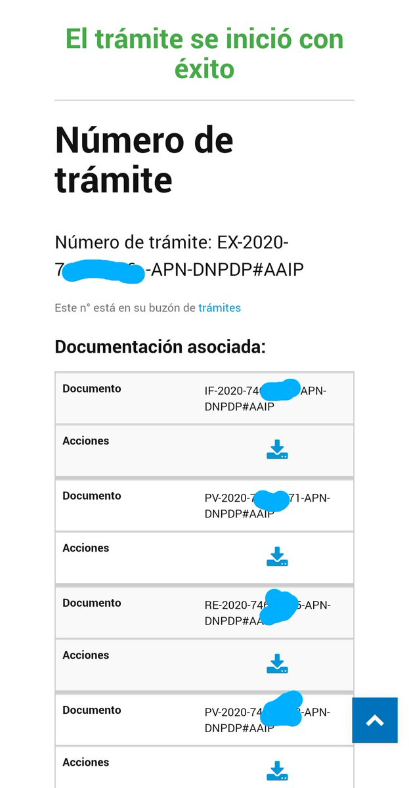

Estudios médicos accesibles cambiando un número en la URL
Originalmente publicado como hilo en Twitter.
Fui a hacerme un estudio médico y me dieron un link para descargarlo.
Adivina si cambiando la URL puedo acceder a los estudios médicos de todos los demás pacientes.
Ya les notifiqué el error. Lamentablemente no creo que lo corrijan. ¿Dónde se denuncia esto?
Gracias por todas las sugerencias. Finalmente encontré que vía Trámites a Distancia se puede iniciar una "Denuncia por Incumplimiento Ley de Protección de Datos Personales". Veremos qué pasa.

Después de enviarle un email con la denuncia en protección de datos personales a la clínica, pareciera que todos los links están caídos o cambiados. Gracias también a @icic_ar por interesarse en el tema.
Lo que pasó después
Luego de la denuncia el sitio estuvo caído unas 48 horas. Después volvió, ahora con un pedido de claves — que en la práctica era usuario: DNI, clave: DNI. O sea, prácticamente lo mismo en términos de protección.
Y, ya en plan anecdótico: cuando más adelante llamé para pedir otro turno, me dijeron que no tenían disponibilidad.
![Pandemia de datos II [Episodio 35]](https://cadenadedatos.org/audios-y-rss/audios/s02e35-pandemia-de-datos-ii.png)